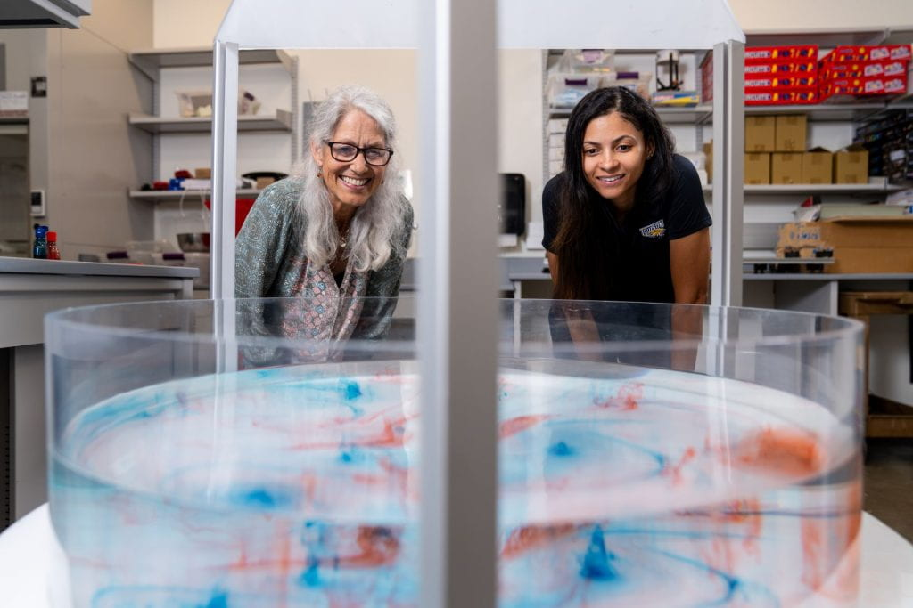
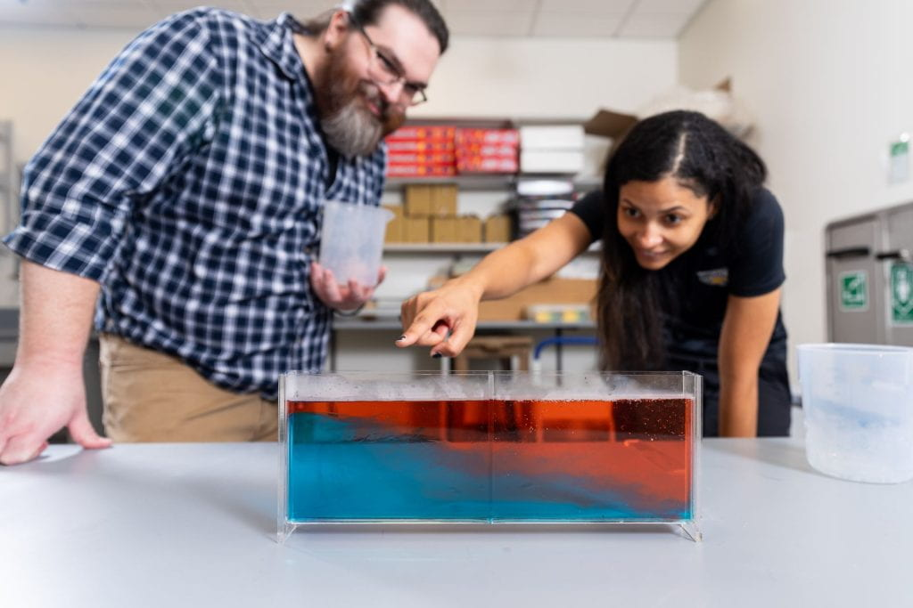
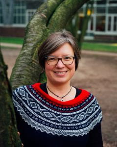
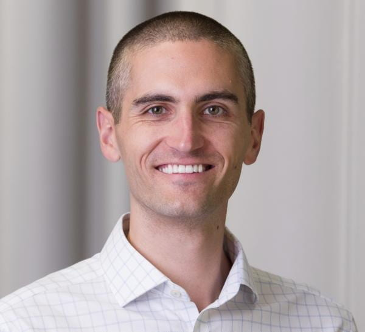

Research Projects › Density & Rotating Tanks
How do students use spatial reasoning to think and learn in fluid-Earth science disciplines such as oceanography and atmospheric science?
This project conducts fundamental STEM education research into the spatial reasoning behind learning in the fluid Earth sciences. With application to curriculum and pedagogy, a central goal is to make fluid-Earth science more accessible to students from a broad range of backgrounds, experiences, and abilities.
The Fluid-Earth Science Spatial Thinking Lab
Our lab investigates how students understand and learn concepts in the fluid Earth sciences, particularly atmospheric science and oceanography.
At its heart is an HT3 rotating-tank system: a 76 cm diameter transparent tank on a Taylor-Henry cart. The motorized turntable supports up to 200 pounds and runs at variable speeds up to 13.3 RPM. It lets us demonstrate key fluid-dynamics phenomena — solid-body rotation of dyed water, the effects of stirring, and the formation of Taylor columns. In interviews built around these demonstrations, we explore how students make sense of ideas like “rigid water” in solid-body rotation. These experiments model geophysical fluid dynamics, reflecting the behavior of Earth's oceans and atmosphere.

The lab also features several density tanks that demonstrate interactions between fluids of different densities. We use these during interviews to study how students understand fluid behavior, particularly stratification — helping us trace where student misconceptions originate and how hands-on demonstrations shape learning.

Project Outcomes
This project investigated how undergraduate students use spatial reasoning to make sense of fluid transformations observed in physical models of oceanic and atmospheric processes — specifically, the density-tank and rotating-tank demonstrations common in introductory oceanography and atmospheric science courses. As a BCSER:IID project, it had two equally important goals: advancing fundamental STEM education research and supporting the PI's professional development as an emerging researcher at the intersection of geoscience education and cognitive science.
Intellectual Merit
How students think and learn in fluid-Earth science disciplines is a largely uncharted area of research. Fluids — unlike the rocks and rigid structures that dominate much of traditional geoscience — do not behave as solid objects, and the spatial reasoning required to interpret them is poorly understood. This project produced new knowledge about student mental models of fluid processes and contributed to theory-building in both cognitive science and geoscience education.
We conducted two rounds of semi-structured interviews with 59 undergraduate students, using density and rotating tank demonstrations as the basis for think-aloud inquiry. Analysis of transcripts, participant sketches, and video revealed that students arrive with coherent but systematically incorrect mental models of fluid behavior. In the density-tank work, many predicted that fluids of different densities would remain in vertical layers or mix quickly — both inaccurate. In the rotating-tank work, students drew on models of fluids spinning up from rest, predicting that rotation would enhance mixing — the opposite of what occurs. These misconceptions are rooted in everyday experiences inaccurately applied to geophysical fluid contexts, and demonstrations alone do not reliably correct them: students showed improved reasoning only about half the time after observing a demonstration.
These findings are documented in peer-reviewed publications and manuscripts under review, including a theoretical contribution — developed with a broader research group — that examines a dominant framework for spatial thinking in geoscience education and proposes an adjunct strategy for fluid-Earth contexts.
Broader Impacts
The project established a fully equipped fluid-Earth science research laboratory at Towson University, housing a rotating-tank system now used for both research and undergraduate classroom demonstrations. It supported a Master's-level graduate research assistant whose thesis drew directly on project data; she defended successfully at the close of the project period, gaining skills in qualitative methods, data analysis, and scientific dissemination, and presented her work at a national conference.
As a capacity-building grant, the project expanded the PI's ability to conduct cognitive science research through formal coursework in cognitive psychology, sustained mentoring from a leading cognitive scientist, and participation in an active research group. That mentoring relationship grew into a full collaboration — co-authored publications, a jointly led research interest group, and ultimately a new NSF-funded project (investigating how students and experts reason about atmospheric processes during convective field studies) in which the PI and mentor serve as co-investigators — a direct intellectual descendant of the work begun here. Results were shared through peer-reviewed publication, conference presentations, invited lectures, and a workshop that brought the findings directly to fluid-Earth science instructors.
Project Members





Learn More